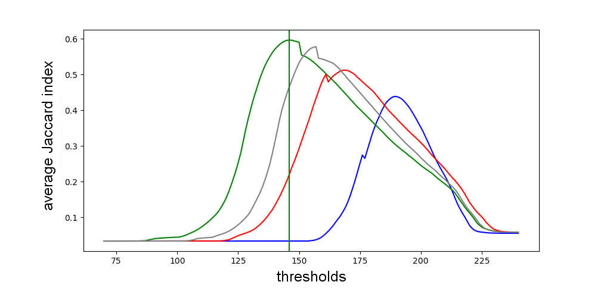

Automatic differential count of leucocytes in microscopic images.
This project was the subject of my computer science graduation's final paper. Mainly, it was a work in computer vision and machine learning, but it also involved biomedicine, visual interface prototyping and a lot of scientific reading and writing.
My goal was to automate a biomedical process: the counting of leucocytes (white blood cells). This count is very important for the diagnosis of diseases, ranging from allergies to HIV. The project originated from the concrete need of a colleague, who was studying for a master’s in pharmacology. She strived daily with this process, which she did manually for her research: she literally sat at the microscope and counted the cells, one by one, on multiple slide positions to get a broader sample. This manual approach is slow, tiresome, prone to error and bias. For that reason, it ought for an alternative, and we applied tech to conceive one.
At first, for a few months, a deep research of the existing scientific literature on the topic was made. Turned out that there was a lot of existing work on automating cell counting processes, even by means of the processing of microscopic images, but they ranged through many types of cells, different types of samples (i.e. blood, tissue) or were simply too generic. No clean-cut recipe that fit our needs was available, and it was so that I had to adapt and experiment.
The general framework and methodology, though, could be drawn from the literature, as there was reasonable consensus: first, the image needs to be preprocessed for noise removal; then, it needs to be segmented, separating the regions of interest (potential cells) for further analysis; finally, for each segmented region, a set of descriptive features is extracted and fed to a classifier, which determines if it’s a cell or not (and which cell, being our count differential).
Defined the 4 steps shown above, they act as slots for a variety of algorithms. To choose which algorithms would compose the pipeline of my final proposed method, I first intuitively selected a few from the scientific literature. Then, I continued the selection empirically, so I could pick the options that best served my specific domain (the leucocytes at my colleague’s research).
For that, a set of 100+ microscopic images was first taken, at her laboratory. Then, I (with the help of the specialist) made multiple sorts of annotations, like number of cells in an image, ideal segmentation and correct class (classifier output) provided a region. Those acted as ground truth for the choosing and parametrization of the algorithms, alongside accuracy metrics drawn from the literature.
It was just then, half-way through the final year, that the coding started. But not before I learned Python from scratch. Because of its script-like structure, the language seemed adequate for the execution of the experiments. In fact, once I learned my way around, the simplicity and high level of abstraction were very welcome during the process of exploring the data. With matplotlib, I could both easily visualize my results and generate presentable graphs for the paper.

This graph shows the results for an exaustive test that I ran. Each line represents either a RGB color channel or the grayscale, and shows the average performance achieved by segmenting the image through a fixed threshold, using the Jaccard index as metric. It was because of this plot that I observed how the green RGB channel had more correlation with the problem at hand.
For manipulating the images, I used OpenCV, an open-source library with algorithms on computer vision. OpenCV was not just a facilitator, but rather necessary. Navigating through pixels in an interpreted language like Python, as I sadly discovered, showed to be quite computationally consuming. In contrast, OpenCV is written in C/C++ and can make use of the GPU.
That said, not all needed algorithms were available in OpenCV. This was the case of the limiarization by minimization of the fuzzy divergence, for example, an algorithm that I tested for the segmentation step. For this algorithm and others, I had to build them up from the OpenCV basic operations, which required me to get a good grasp of the library.
For the classification step, I ended up using a support vector machine (SVM). The scikit-learn library provided me not only with that algorithm’s implementation but also with implementation for k-fold crossed validation, linear discriminant analysis (LDA) for the selection of the most relevant features and the ROC curve to show the output of the SVM.
The results obtained can be seen on the ROC curve above, representing a binary SVM that individually recognize neutrophils, a type of leukocyte. Even though the accuracy rate was quite high (92 on average), the experiment that led to those results was executed over ideally segmented regions. Those, unfortunately, were not close to being automatically generated, having the segmentation step not faired so well as the classification.
As an aftermath, the whole proposed method (from image to final count) did not reach good enough results that would justify the proper creation of an application. Despite that, the project served not only to make me venture into many previously unknown fields (and thus learn new things), but also to raise some questions and ideas for further work on the subject, which were included in the paper.
Additionally, my human-machine interaction teacher prompted me to apply the UX concepts learned at his class on the prototyping of a graphic interface for this project. Or rather, a mobile application with objective to capture images through the microscope and display the cell counting results. For that, I used Pingendo, a graphical environment for design and development with HTML that uses Bootstrap.
Once the experiments were concluded and, with the results, the final method (algorithms and its optimal parameters) was determined, started a long period of writing. This process can be daunting, even more for a beginner. To help me keep track of the many references, technical terms, sections and chapters, I had to resort to LaTeX, which also helped me to comply with the writing standards required by my college (someone, to who I am very grateful, had built a template).
As instructed by my mentor, a scientific paper must be extensively revised so there are no errors left and the result is coherent, self-contained and non-redundant. For that to be accomplished, a lot of effort is necessary, but in turn one also conquers a sort of hard-won fluency on the subject.
I did that, and, when the final presentation day came, I could speak with ease about all the subjects touched by my work. I received an A, both for the presentation and for the paper.
Later, my project was invited to be presented at InovaFEI, a congress on innovation. There, it was judged on its social impact and relevance. Also, my ability to explain the project to people of other fields was taken into account. In the end, my project was awarded with first place in computer science.
All the code, images and annotations are available at a GitHub repository. The paper (which was written in portuguese) can also be download here.